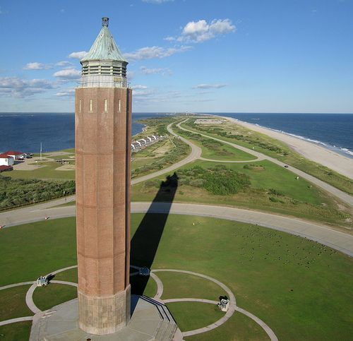
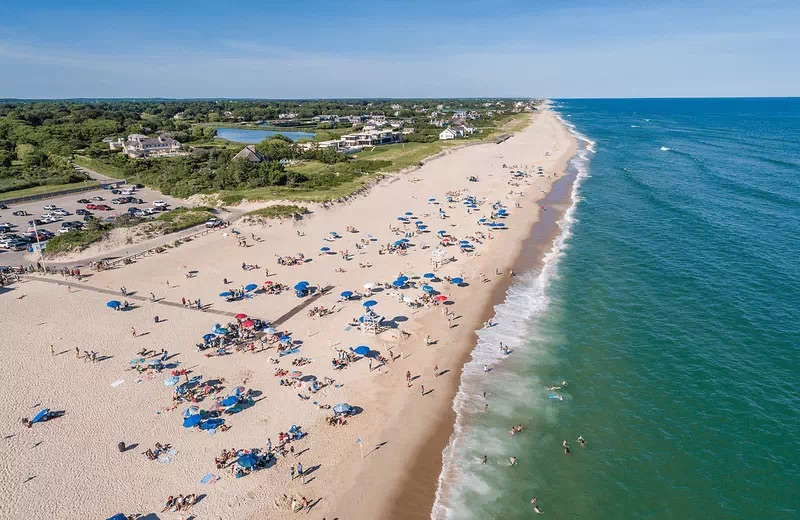
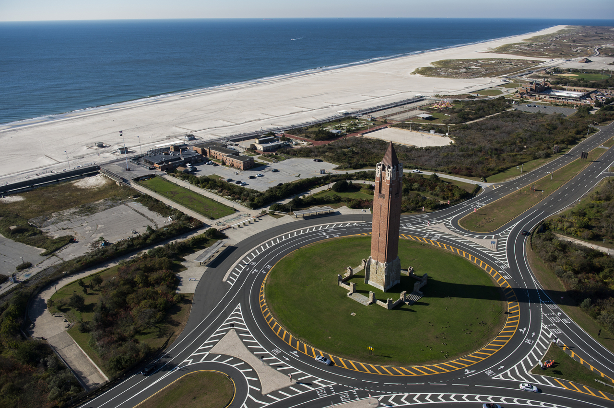
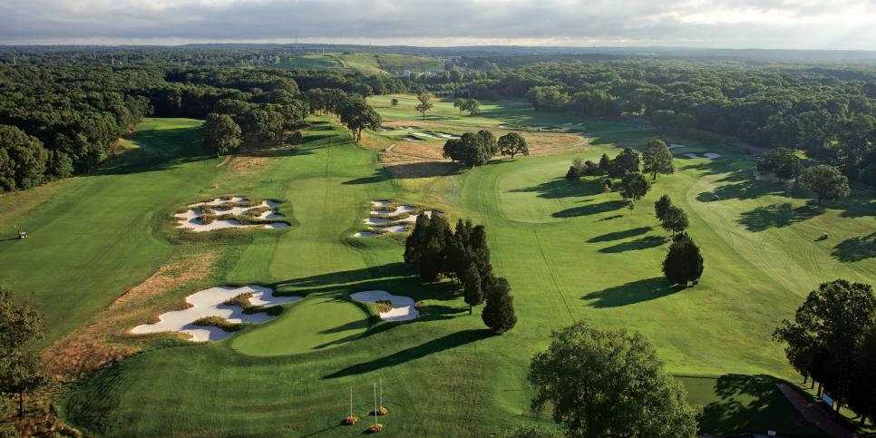
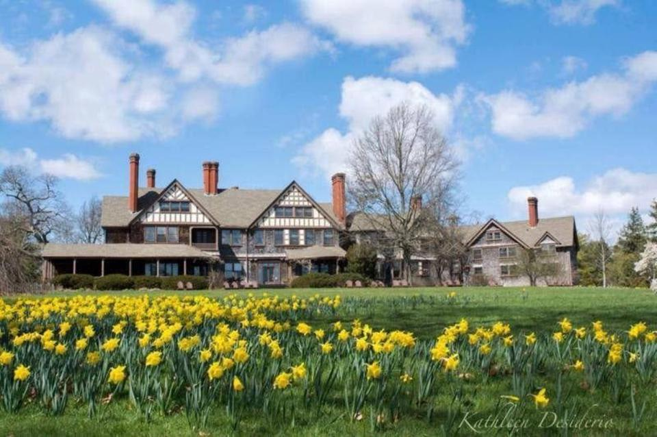

|  |
Robert Moses State ParkOcean beach with picnic areas, playgrounds, pitch-&-putt golf & access to Fire Island Lighthouse. View Website View on Map |
|  |
Coopers BeachQuiet beach with guards on duty offers snacks & chair/umbrella rentals, with high-end fee to park. View Website View on Map |
|  |
Jones Beach State ParkSix miles of ocean beach, with snack bar, pool, locker rooms, picnic areas & a summer concert venue. View Website View on Map |
|  |
Bethpage State ParkLarge park featuring 5 golf courses, hiking & biking trails & picnic facilities. View Website View on Map |
|  |
Bayard Cutting Arboretum State ParkA scenic 691-acre park situated on the Connetquot River, with a 1920's mansion as its centerpiece. View Website View on Map |